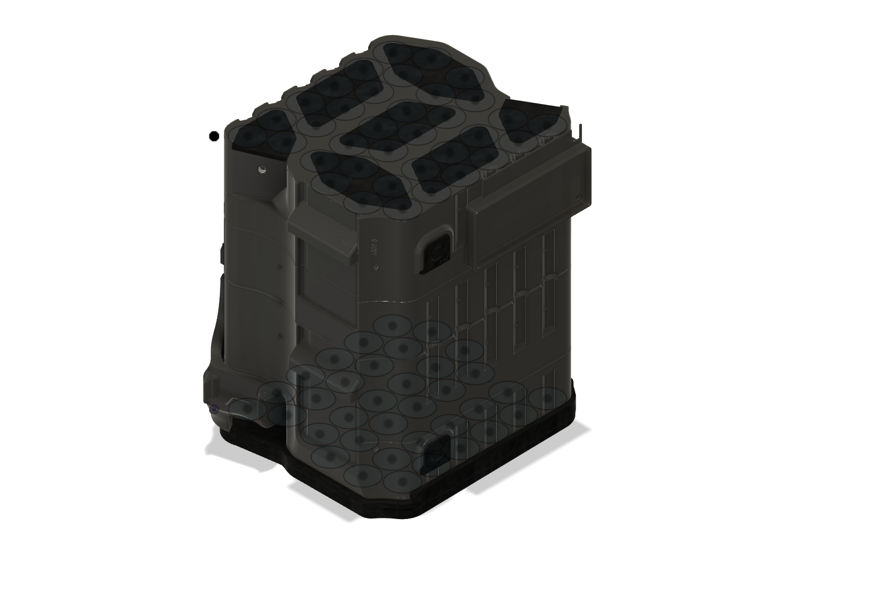

I work across physical models and interactive software. This is a selection of design studies, prototype concepts and browser applications—each with a clear account of what it does and where it stands.
A tooling concept for a thin copper blank. The assembly separates the punch, guide pins, stripper and supported lower die so the interfaces can be examined.
Focus
Assembly layout, clearances and support
Files
Fusion, STEP and DXF review files
Status
CAD prototype; revision needed before physical trial
Read the project notes +
The review considers cutter access, strip guidance, support beneath the cutting region and how the sheet is held during withdrawal. Existing geometry reports document nominal checks; they do not establish a successful cut or production tooling approval. Physical fit and performance remain to be tested.

24S 3P [Cylindrical] / actual CAD view
02 / PARAMETRIC BATTERY DESIGN
A pack model, developed through iteration.
My sodium-ion battery design work includes this cylindrical pack, case pieces, a cooling duct, terminal covers and BMS-related parts. The model uses named parameters and expressions to connect its dimensions.
Design
24S 3P [Cylindrical]
History
Saved records: July 13, 2024–April 1, 2026
Status
Parametric CAD; physical validation recorded separately
Read the project notes +
The open model inspected for this review has 27 user parameters, 32 components and 1,075 timeline entries. This capture is from its recovered session; saved cloud version 66 has separate date records. No model changes were saved during this review. Geometry and parameter evidence do not establish battery safety, electrical performance or road certification.
An archived design view from a storefront prototype: product storytelling, a catalog, product options and a bag preview. The original graphics are concept illustrations.
Source history: October 18–20, 2026 · Pacific time
Local prototype. No live commerce or customer orders. Original source remains private.
Website design sample. Its illustrative and stock imagery is separate from physical prototype evidence. Initial design date is unconfirmed.
ZOMBIE FIRE / RESEARCH APPLICATION
A technical idea made explorable.
A React and Three.js research interface for exploring underground peat-fire scenarios. Its documentation distinguishes illustrative scenes from reduced numerical models and their limitations.
Source history: September 25–October 12, 2026 Public source reviewed; no hosted browser demo verified.
Exploratory application; field performance is not established by the simulation.
SODIUM-ION MOTORCYCLE / COLLABORATIVE PROJECT
Battery design, part of a larger machine.
My motorcycle work with Aubrey Cooper connects battery packaging with an electric-motorcycle development project. Cal Poly Humboldt recorded our first-place motorcycle pitch at Grow Tech Fest 2025 in an achievement entry submitted November 17, 2025.
The battery design history includes earlier pouch, cylindrical-layout and cooling-plate iterations. The latest design is 24S 3P [Cylindrical], with saved cloud history extending from July 2024 through April 2026.
November 17 is the recognition entry date. Original design, build and first operating dates are still being documented.
05 / CUSTOM GEOMETRY
Pipe connection study
A Fusion model exploring threaded end geometry on a hollow pipe, with a visible feature timeline. This is a custom geometry study; standardized thread compliance, mating fit and pressure performance have not been verified.
DIGITAL MODEL
Start with a clear scope.
WORKING TOGETHER
Mechanical CAD
Part models, assembly revisions and prototype concepts. Start with your files, dimensions and the change you need.
$80 / hour
CAD bookings depend on confirmation of an appropriate commercial software license.
Web design & development
Focused landing pages, small websites and interactive technical interfaces, with agreed content, revisions and handoff.
$40 / hour
Fixed quotes available after reviewing the materials and scope.
A practical first step
Send a short description, existing files and your deadline. We can define what needs to be delivered and what belongs in a later phase.